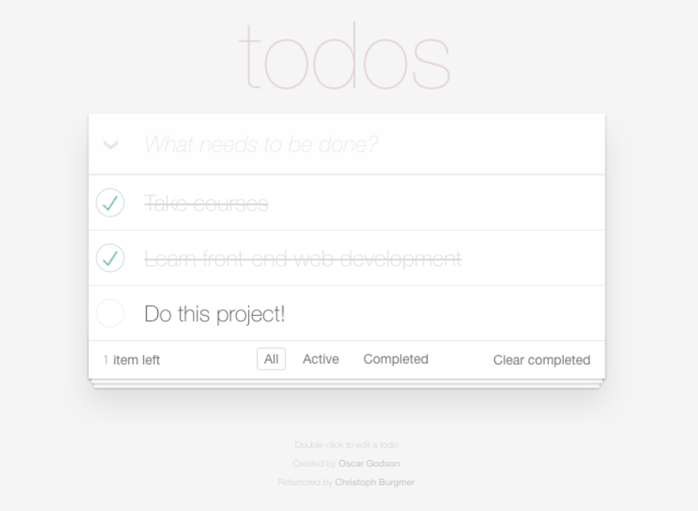
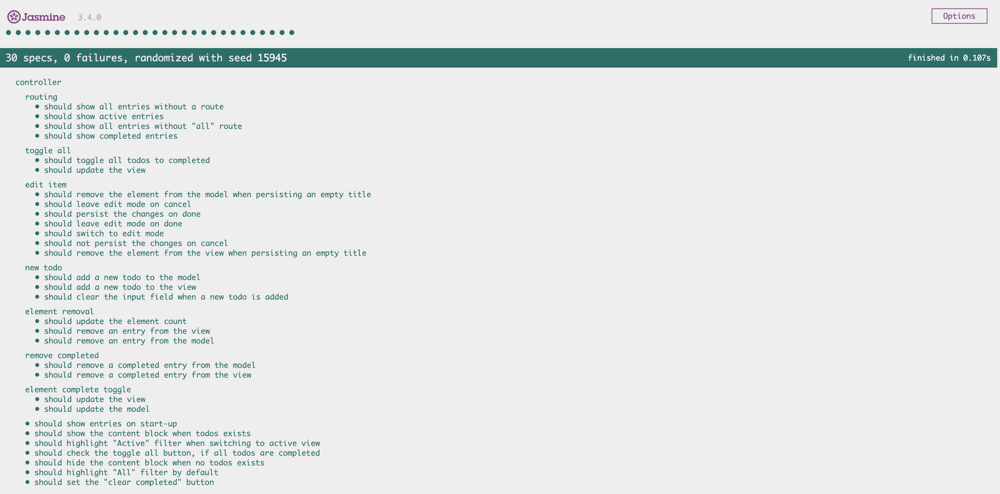

Product information
Todo List is a tool that helps you organise your life.
It is easy to use and does not require an internet
connection.
Features
- Add todo
- Edit todo
- Delete todo
- Mark a todo as completed
- Toggle all todos as completed
- Filter todos
- Clear all completed todos
Adding a todo
Click on the input field 'What needs to be done?' and enter the title of your new todo.
Editing a todo
Double click on the title of the item you would like to edit.
Deleting a todo
Hover over the title of the item you would like to edit, a close icon appears. By clicking on the icon the item
is deleted.
Marking a todo as completed
Click on the check symbol in the item field, the check symbol turns green and the todo is marked as completed.
Toggling all todos to complete
Click on the arrow in the input field, all items will be toggled as completed.
Filtering todos
Click on one of the buttons below the list, the list will update and only show items of the chosen category.
Clear all completed todos
Click on one of the 'Clear completed' button below the list, all completed items will be deleted.

Copyright (c) Addy Osmani, Sindre Sorhus, Pascal Hartig, Stephen Sawchuk.
Technical Information
Code base
This application was built using HTML, CSS, JavaScript and the TodoMVC framework.
The TodoMVC Framework
MVC stands for Model-View-Controller and is an acrchitectural pattern that divides an application into 3
seperated entities. The Model component handles all data-related operations. The View component handles the
render-related tasks and includes elements the user interacts with. The Controller component is the interface
between Model and View component, it handles incoming requests, it handles data via the Model component and
renders the final output using the View component.
Saving data
The users data is stored locally in the browsers local storage allowing the app to be used without active
internet connection.
Set Up
You can clone the project from my github repository via the command line:
$ git clone https://github.com/IanCapo/od-project-8
Or simply follow this link to my github
repository and download or clone the repo.

Then open the index.html file in your preferred browser (chrome is recommended).
Project enhancement - finding bugs
AddItem not working
Thanks to the Chrome Console I could easily spot a spelling error in the controller.js file on line 95:
Duplicating of IDs
In the store.js in Store.prototype.save on lines 83 - 89 and line 107 an ID for a new todo is
randomly
generated. Here I added a function that checks whether the new ID has already been assigned to another item and
if
so, generates a new ID.
Refactor code from Store.prototype.removeItem
In line 160 to 170 I commented out code that was only used to generate a console.log for the developer.
Comment out code without function in Store.prototype.removeItem
In lines 136 to 144 a variable was assigned a value by looping through an array. My guess is, that this
variabel was inteded to be used in the adjacent for loop but was not needed. I commented it out.
Testing
The application has been developed using jasmine testing. It allows the developer to add tests to
functions in
order to ensure the code is written properly and that future enhancements do not implicate the existing
code.
To run the test open the specRunner.html in the
jasmine-standalone folder in your preferred browser.
For detailed information on Jasmine checkout their documentation here.
